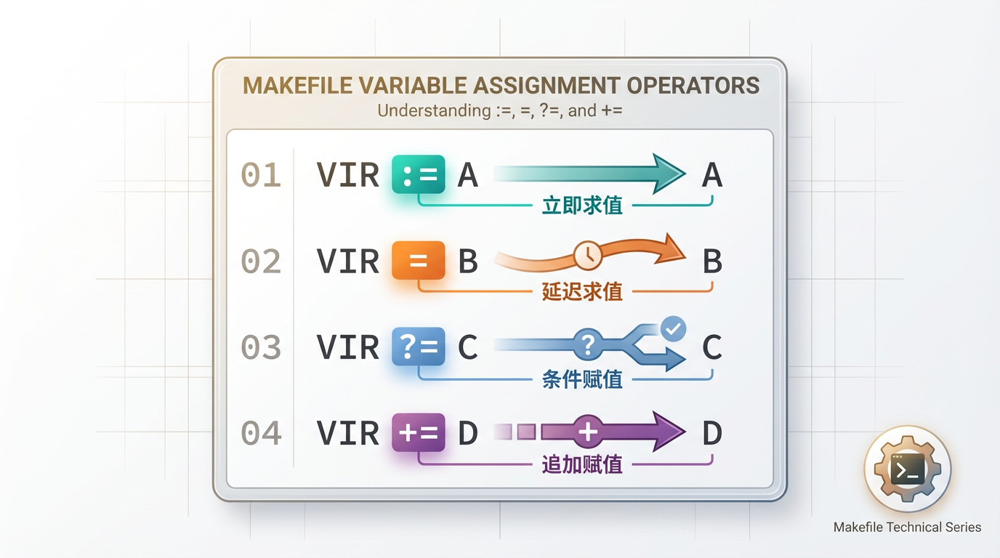

Makefile中:=, =, ?=和+=的含义
在Makefile语法中，时不时会见到各种“=”号的赋值语句，除了常见的“=”和“:=”，还有“?=”等
那么这些赋值等号分别表示什么含义呢？

1. “=”
"=“是最普通的等号，然而在Makefile中确实最容易搞错的赋值等号，使用”="进行赋值，变量的值是整个makefile中最后被指定的值。不太容易理解，举个例子如下：
1 |
|
经过上面的赋值后，最后VIR_B的值是AA B，而不是A B。在make时，会把整个makefile展开，拉通决定变量的值
2. “:=”
相比于前面“最普通”的"=“，”:=“就容易理解多了。”:="就表示直接赋值，赋予当前位置的值。同样举个例子说明
1 | VIR_A := A |
最后变量VIR_B的值是A B，即根据当前位置进行赋值。因此相比于"=“，”:="才是真正意义上的直接赋值。
3. “?=”
"？="表示如果该变量没有被赋值，则赋予等号后的值。举例：
1 |
|
如果VIR在之前没有被赋值，那么VIR的值就为new_value.
1 | VIR := old_value |
这种情况下，VIR的值就是old_value
4. “+=”
"+="和平时写代码的理解是一样的，表示将等号后面的值添加到前面的变量上